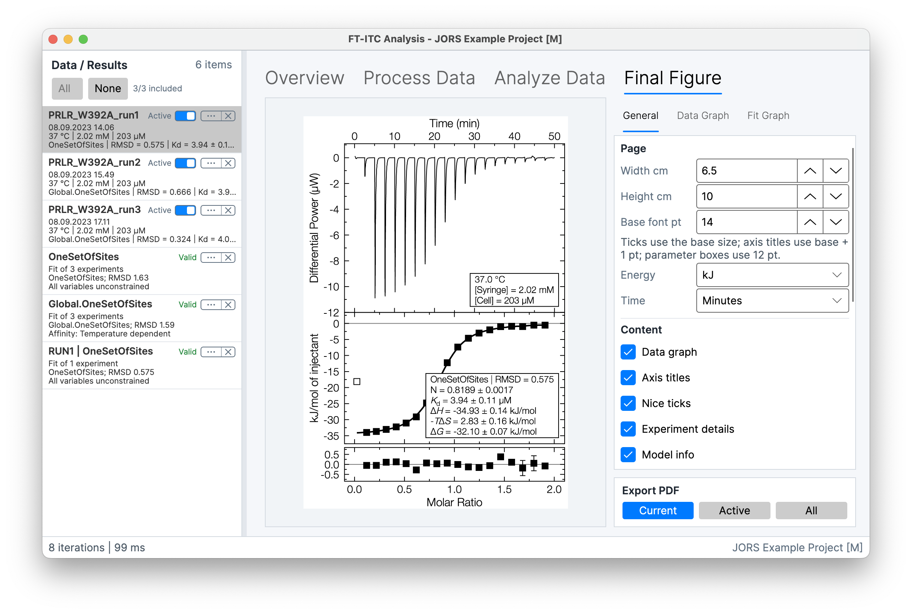

.itc
MicroCal raw data
Open raw ITC experiments for inspection, baseline fitting and integration.
The desktop analysis workspace
FT-ITC Analysis is a free, open-source desktop workspace for importing, processing, fitting and presenting ITC data—with flexible controls for every analytical step.

Choose your platform for availability, system requirements and installation guidance.
ITC file formats
Import compatible raw data, vendor exports and integrated heats from the tools you already use.
.itc
Open raw ITC experiments for inspection, baseline fitting and integration.
.TA
Import TA Instruments / NanoAnalyze exports for processing and analysis.
.apj
Extract available integrated experiment data from PEAQ-ITC project files.
.dat · .aff · .dh
Bring compatible integrated heat data into fitting and further analysis.
Advanced processing
Refine spline baselines, adjust integration windows and exclude regions that should not contribute to the fitted heats. The processing view keeps those choices visible alongside the thermogram.

Work across experiments
Analyse related datasets together, sharing selected parameters while retaining experiment-specific values where needed.
Simultaneously fit multiple isotherms, connect parameters through physical relationships, and evaluate systematic effects across temperature, buffer or salt conditions.
Apply direct, linear-fit or exponential-fit reference subtraction with propagated uncertainty.
Combine syringe-refill experiments using standard concatenation or back-mixing compensation.
Results that communicate
Bring the thermogram, integrated heats, fitted model and residuals together in a configurable figure. Export a clear PDF while retaining the context needed to review the result.

Local-first by design
FT-ITC Analysis does not require an account or upload your experimental data to an FT-ITC service. The desktop application runs locally, while the public repository makes the code and release record available for inspection.
The project is distributed under the MIT License. Use GitHub to access releases, source code, issue reporting and the citable software record.
Visit the repository ↗